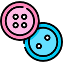
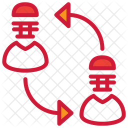

Tarea sobre el DOM y modificar elementos de este.
Entrar al sitio y ver las imágenes dentro del texto y que existan , el botón de ‘solo texto’ eso me  las imágenes por el que tengan las imágenes en el atributo ALT luego si presiono el botón ‘ver imágenes’ vuelve y me muestra las imágenes
Cambiar a Texto
Cambiar a Imagenes